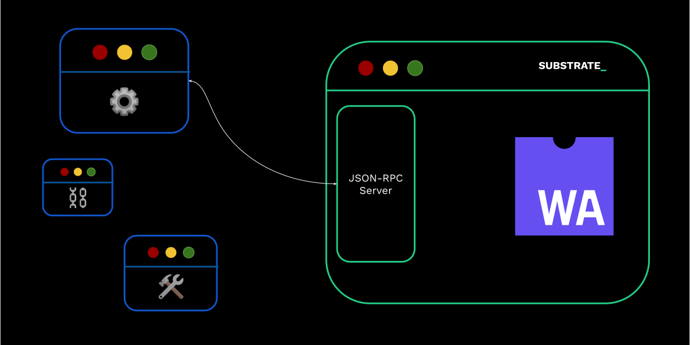

<!DOCTYPE html>
<html lang="en">

<head>
  <meta charset="utf-8" />
  <meta name="viewport" content="width=device-width, initial-scale=1.0, maximum-scale=1.0, user-scalable=no" />

  <title>JSON-RPC Protocol</title>
  <link rel="shortcut icon" href="./../../assets/favicon.ico" />
  <link rel="stylesheet" href="./../../dist/reset.css" />
  <link rel="stylesheet" href="./../../dist/reveal.css" />
  <link rel="stylesheet" href="./../../assets/styles/PBA-theme.css" id="theme" />
  <link rel="stylesheet" href="./../../css/highlight/shades-of-purple.css" />

  <link rel="stylesheet" href="./../.././assets/styles/custom-classes.css" />

</head>

<body class="site">
  <header class="site-header">
    <!-- This logo is a link only on the watching server, not the production build -->
      
  </header>
  <main class="reveal">
    <article class="slides">
      <section  data-markdown><script type="text/template">

# JSON-RPC Protocol

### _..and its usage in Substrate._
</script></section><section  data-markdown><script type="text/template">
### The Need For a Common Language


</script></section><section ><section data-markdown><script type="text/template">
## JSON-RPC

> JSON-RPC is a remote procedure call protocol encoded in JSON. It is similar to the XML-RPC protocol, defining only a few data types and commands.
</script></section><section data-markdown><script type="text/template">
### JSON-RPC

- Nowadays, mostly version 2 is used.
- Request

```json
{ "jsonrpc": "2.0", "method": "subtract", "params": { "minuend": 42, "subtrahend": 23 }, "id": 3 }
```

- Response, if `id` is provided

```json
{ "jsonrpc": "2.0", "result": 19, "id": 3 }
```
</script></section><section data-markdown><script type="text/template">
### JSON-RPC

- Entirely transport agnostic. Deliver the packet to the server, and it will reply.
- Substrate based chains expose both `ws` and `http` (or `wss` and `https`, if desired).

> with `--ws-port` and `--rpc-port`, 9944 and 9934 respectively.

<aside class="notes"><pre><code class="language-sh"># Kusama endpoint
echo &#39;{ &quot;jsonrpc&quot;:&quot;2.0&quot;, &quot;id&quot;:1,  &quot;method&quot;:&quot;system_chain&quot; }&#39; | websocat -B 99999999 ws://34.79.74.54:9924
</code></pre>
</aside></script></section><section data-markdown><script type="text/template">
### JSON-RPC

- JSON-RPC methods are conventionally written as `scope_method`

  - e.g. `rpc_methods`, `state_call`

- `author`: for submitting stuff to the chain.
- `chain`: for retrieving information about the _blockchain_ data.
- `state`: for retrieving information about the _state_ data.
- `system`: information about the chain, not to be confused with `frame-system`.
- `rpc`: information about the RPC endpoints.
</script></section><section data-markdown><script type="text/template">
### JSON-RPC

- The full list of substrate RPC can be seen here: https://polkadot.js.org/docs/substrate/rpc/
</script></section><section data-markdown><script type="text/template">
### JSON-RPC

- Let's look at a few examples:

- `system_name`, `system_chain`, `system_chainType`, `system_health`, `system_version`, `system_nodeRoles`, `rpc_methods`, `state_getRuntimeVersion`, `state_getMetadata`

NOTES

```shZ
# Polkadot public endpoint
echo '{"jsonrpc":"2.0", "id":1, "method":"system_chain" }' | websocat -B 99999999 wss://rpc.polkadot.io | jq
```
</script></section><section data-markdown><script type="text/template">
### JSON-RPC

- The whole point of JSON-RPC is to abstract away programming languages and allow a client and server to talk to each other.
- That being said, the following are the noteworthy "libraries" examples that you can use:
  - `polkadot.js API`: low and high level library in JS/TS
  - `JSONRPSee` (low level Rust library)
  - `subxt` (high level Rust library)
  - https://polkadot.js.org/apps/#/rpc
</script></section><section data-markdown><script type="text/template">
### JSON-RPC: Activity

- Prepare `websocat` (and optionally `jq` to pretty display JSON outputs) as your tool of
  choice.

1. Find the genesis hash of the given chain via RPC.
1. Find the first 4 bytes of the code of the given chain.
1. Find the first 4 bytes of the code of the given chain at block 1 million.
1. The block number is stored under `twox(System) ++ twox(Number)`. Find it!

<aside class="notes"><pre><code class="language-sh"># Kusama
echo &#39;{&quot;jsonrpc&quot;:&quot;2.0&quot;, &quot;id&quot;:72, &quot;method&quot;:&quot;chain_getBlockHash&quot;, &quot;params&quot;: [&quot;0x0&quot;] }&#39; | websocat -B 99999999 ws://34.79.74.54:9944 | jq
echo &#39;{&quot;jsonrpc&quot;:&quot;2.0&quot;, &quot;id&quot;:72, &quot;method&quot;:&quot;chain_getBlock&quot;, &quot;params&quot;: [&quot;0x91b171bb158e2d3848fa23a9f1c25182fb8e20313b2c1eb49219da7a70ce90c3&quot;] }&#39; | websocat -B 99999999 ws://34.79.74.54:9944 | jq

echo &#39;{&quot;jsonrpc&quot;:&quot;2.0&quot;, &quot;id&quot;:72, &quot;method&quot;:&quot;state_getStorage&quot;, &quot;params&quot;: [&quot;0x3a636f6465&quot;] }&#39; | websocat -B 99999999  ws://34.79.74.54:9944 | head -c 100

System: 0x26aa394eea5630e07c48ae0c9558cef7
Number: 0x02a5c1b19ab7a04f536c519aca4983ac
Key: 0x26aa394eea5630e07c48ae0c9558cef702a5c1b19ab7a04f536c519aca4983ac
</code></pre>
</aside></script></section><section data-markdown><script type="text/template">
### JSON-RPC: Code Activity

- Try and find all the RPC endpoints in the Rust code!
- The runtime can expose custom RPCs as well, try and find them!
- You have 15 minutes!
</script></section></section><section  data-markdown><script type="text/template">
## Additional Resources! 😋

> Check speaker notes (click "s" 😉)

<aside class="notes"><ul>
<li>see &quot;Client Libraries&quot; here: <a href="https://project-awesome.org/substrate-developer-hub/awesome-substrate">https://project-awesome.org/substrate-developer-hub/awesome-substrate</a></li>
<li><a href="https://paritytech.github.io/json-rpc-interface-spec/introduction.html">https://paritytech.github.io/json-rpc-interface-spec/introduction.html</a></li>
</ul>
</aside></script></section>
    </article>
  </main>

  <script src="./../../dist/reveal.js"></script>

  <script src="./../../plugin/markdown/markdown.js"></script>
  <script src="./../../plugin/highlight/highlight.js"></script>
  <script src="./../../plugin/zoom/zoom.js"></script>
  <script src="./../../plugin/notes/notes.js"></script>
  <script src="./../../plugin/math/math.js"></script>
  <script>
    function extend() {
      var target = {};
      for (var i = 0; i < arguments.length; i++) {
        var source = arguments[i];
        for (var key in source) {
          if (source.hasOwnProperty(key)) {
            target[key] = source[key];
          }
        }
      }
      return target;
    }

    // default options to init reveal.js
    var defaultOptions = {
      controls: true,
      progress: true,
      history: true,
      center: true,
      transition: 'default', // none/fade/slide/convex/concave/zoom
      slideNumber: true,
      plugins: [
        RevealMarkdown,
        RevealHighlight,
        RevealZoom,
        RevealNotes,
        RevealMath
      ]
    };

    // options from URL query string
    var queryOptions = Reveal().getQueryHash() || {};

    var options = extend(defaultOptions, {"width":1400,"height":900,"margin":0,"minScale":0.2,"maxScale":2,"transition":"none","controls":true,"progress":true,"center":true,"slideNumber":true,"backgroundTransition":"fade"}, queryOptions);
  </script>


  <script>
    Reveal.initialize(options);
  </script>
</body>

</html>
